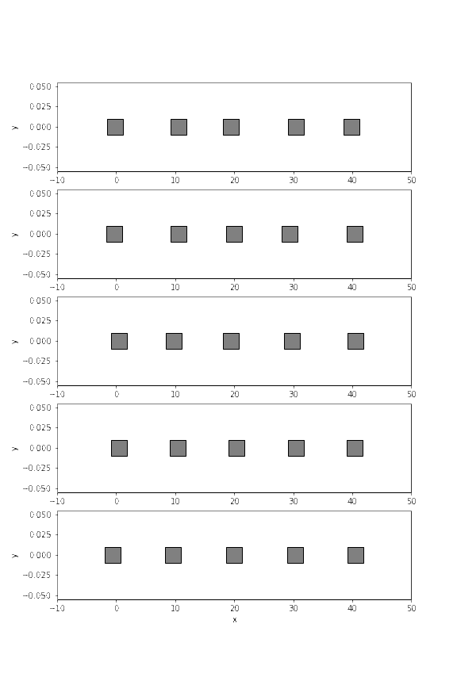

Coupled harmonic oscillators
Table of Contents
%config InlineBackend.figure_format = 'svg' import numpy as np import matplotlib.pyplot as plt import scipy.integrate as integrate import numpy.linalg as la
1 \(N\) coupled harmonic oscillators: Normal modes
1.1 Theoretical considerations
(The following discussion is partially based on Spivak’s book Spvk)
Many physical systems can be thought of as a collection of oscillators influencing each other in potentially quite complex ways. Such behaviours can certainly arise, even in one of the simplest such systems, namely, two pendulums of the same mass \(m\) and length \(l\), connected by a spring with sping constant \(\kappa\), whose unstreched length is the distance between the two pendulums when they are in vertical (equilibrium) position.
Let us momentarily work with the small-angle approximation, so as to make the general discussion simpler. Letting \(K := \kappa/m\) and \(\omega_0 = \sqrt{g/l}\), the displacements of the two pendulums from their vertical positions can be written as the pair of equations
\begin{gather*} {x_1}'' + {\omega_0}^2 x_1 = -K(x_1 - x_2), \\ {x_2}'' + {\omega_0}^2 x_2 = -K(x_2 - x_1). \end{gather*}These may be solved, provided some initial conditions, with the help of various mathematical tricks. However, it is usual to investigate the most “obvious” solutions thereof, where the pendulums either move in sync (\(x_1 = x_2\)) or in anti-sync (\(x_1 = -x_2\)).
Synchronised motion leads to identical equations \[ {x_k}'' + {\omega_0}^2 x_k = 0, \] so that both pendulums have a frequency \(\omega_0\) with \[ x_1(t) = x_2(t) = a \cos \omega_0 t + b \sin \omega_0 t, \] for some real numbers \(a, b\).
Anti-sync motion, on the other hand, leads to the equations \[ {x_i}'' + {\omega_0}^2 x_i = -2 K x_i, \] which is to say that both pendulums have a frequency \[ {\omega_0}^+ := \sqrt{{\omega_0}^2 + 2K}; \] ultimately giving
\begin{gather*} x_1(t) = c \cos {\omega_0}^+ t + d \sin {\omega_0}^+ t, \\ x_2(t) = -c \cos {\omega_0}^+ t - d \sin {\omega_0}^+ t. \end{gather*}Such solutions, known as the normal modes of the system, are particularly interesting because the pendulums have the same period. As a matter of fact, combinations of the two normal modes,
\begin{gather*} x_1(t) = a \cos \omega_0 t + b \sin \omega_0 t + c \cos {\omega_0}^+ t + d \sin {\omega_0}^+ t, \\ x_2(t) = a \cos \omega_0 t + b \sin \omega_0 t - c \cos {\omega_0}^+ t - d \sin {\omega_0}^+ t, \end{gather*}with four arbitrary constants \(a,b,c,d\), will give us a solution with any desired initial conditions \(x_k(0), {x_k}'(0)\).
Generalisations of these considerations to \(N\) harmonic oscillators, all interacting in a linear way, is easy. If we have \(n\) possibly different masses, \(m_i\) and lengths \(l_i\), by setting \[ K_k = \frac{\kappa}{m_k} \quad {\omega_k}^2 = \frac{g}{l_k}, \] we should get \(N\) equations of the form
\begin{equation} {x_k}''(t) + {\omega_k}^2 x_k(t) = \sum_{l=1}^N a_{kl}x_l, \quad k = 1,\ldots,N; \end{equation}where each \(a_{il}\) is some real number depending on some \(K_k\).
In this case, for a normal mode, we get complex solutions \[ x_k(t) = c_k e^{i \lambda t}, \quad k = 1,\ldots,N; \] whose real part represnt the motion of the \(N\) oscillators. Hence we must have: \[ -\lambda^2 c_k e^{i \lambda t} + {\omega_k}^2 c_k e^{i \lambda t} = \sum_{l=1}^N a_{kl} c_l e^{i \lambda t}, \quad k = 1,\ldots,N; \] which can be rewritten as \[ -\lambda^2 c_k = \sum_{l=1}^N a_{kl} c_l - c_k {\omega_k}^2, \quad k = 1,\ldots,N. \] In matrix form, this may be seen as \[ \lambda^2 \begin{pmatrix} c_1 \\ \vdots \\ c_N \end{pmatrix} = \left[ \begin{pmatrix} {\omega_1}^2 & & 0 \\ & \ddots & \\ 0 & & {\omega_N}^2 \end{pmatrix} - \begin{pmatrix} a_{11} & \cdots & a_{1N} \\ \vdots & \ddots & \vdots \\ a_{N1} & \cdots & a_{NN} \end{pmatrix} \right] \begin{pmatrix} c_1 \\ \vdots \\ c_N \end{pmatrix}. \] Therefore, it is clear that \(\lambda^2\) is an eigenvalue of the matrix in brackets, while each \(c_i\) is a component of the corresponding eigenvector. Our problem (that of finding the normal modes) amounts to solving an eigenvalue problem depending on the parameters of the system. Of course, the matrix in brackets turns out to be symmetric, so the spectral theorem tells us that it is diagonalisable, and that there exists a basis of eigenvectors with real eigenvalues.
Notice that the aforementioned discussion was given in terms of arbitrary parameters \(a_{kl}\), yet we wish to address the particular case of \(n\) coupled pendulums. Luckily, we have the apparatus of Newton’s second law, which will help us find the parameters that should be used in our equation.
Let us suppose that the separation between any three pendulums is the same and such that we can safely ignore any small inclination in the direction towards which the sping forces are oriented. With these considerations, we essentialy have
\begin{align*} F_{k,\text{springs}} &= -\kappa(x_k - x_{k-1}) + \kappa(x_{k+1} - x_k), \\ &= \kappa(x_{k-1} - 2x_k + x_{k+1}). \end{align*}Thus equation (1) turns into
\begin{align*} {x_k}''(t) + {\omega_k}^2 x_k(t) &= \frac{\kappa}{m_k} (x_{k-1} - 2x_k + x_{k+1}), \quad k = 1,\ldots,N, \\ &:= K_k (x_{k-1} - 2x_k + x_{k+1}), \quad k = 1,\ldots,N; \end{align*}and so for a normal mode we have: \[ \lambda^2 \begin{pmatrix} c_1 \\ \vdots \\ c_N \end{pmatrix} = \left[ \begin{pmatrix} {\omega_1}^2 & & 0 \\ & \ddots & \\ 0 & & {\omega_N}^2 \end{pmatrix} + \begin{pmatrix} 2K_1 & -K_1 & 0 & 0 & \cdots \\ -K_2 & 2K_2 & -K_2 & 0 & \cdots \\ 0 & -K_3 & 2K_3 & -K_3 & \cdots \\ \vdots & \vdots & \vdots & \vdots & \end{pmatrix} \right] \begin{pmatrix} c_1 \\ \vdots \\ c_N \end{pmatrix}. \] Hence we just need to solve the aforementioned eigenvalue problem with this matrix in particular.
1.2 Numerical implementation
We define a class that allows us to find the normal modes for a system of coupled pendulums, specified by the elastic constant, their masses, and the lengths of their pivots.
g = 9.8 class CoupledPendulums: def __init__(self, elastic_constant, masses, lengths): ''' Initialise the system with the required attributes ''' if len(masses) != len(lengths): raise ValueError('masses and lengths must have the same size') else: self.elastic_constant = elastic_constant self.masses = np.asarray(masses, dtype=float) self.lengths = np.asarray(lengths, dtype=float) self.N = len(masses) def normal_modes_matrix(self): ''' Provided a system of coupled pendulums, returns the stiffness matrix, whose eigenvalues and eigenvectors characterise the system's normal modes ''' K = self.elastic_constant/self.masses omega_squared = g/self.lengths matrix = np.zeros((self.N, self.N), dtype=float) for i in range(self.N): if i-1 < 0: matrix[i,i] = K[i] matrix[i,i+1] = -K[i] else: try: matrix[i,i] = 2*K[i] matrix[i,i-1] = -K[i] matrix[i,i+1] = -K[i] except IndexError: matrix[i,i] = K[i] matrix[i,i-1] = -K[i] return np.diag(omega_squared) + matrix def normal_modes(self, time_domain=np.linspace(0,100,1000)): M = self.normal_modes_matrix() frequencies_squared, amplitudes_matrix = np.linalg.eig(M) frequencies = np.sqrt(frequencies_squared) amplitudes = amplitudes_matrix.T # A list of N matrices of dimension N x len(time) x_coords = np.zeros((self.N, self.N, len(time_domain))) y_coords = np.zeros((self.N, self.N, len(time_domain))) # Now we fill in the data for i in range(self.N): for j in range(self.N): complex_exponential = amplitudes[i,j] * \ np.exp(complex(0,1)*frequencies[i]*time_domain) x_coords[i,j] = complex_exponential.real y_coords[i,j] = self.lengths[i] - \ np.sqrt(self.lengths[i]**2 - x_coords[i,j]**2) return x_coords, y_coords
The above defined class can be used, in particular, to obtain the normal modes for a system of five pendulums:
time = np.linspace(0,30,500) system = CoupledPendulums(1, [5]*5, [1]*5) x_coords, y_coords = system.normal_modes(time_domain=time)
We have five normal modes, the first one of which is the following:
fig, axs = plt.subplots(5,figsize=(15,10), tight_layout=True) fig.suptitle('Normal modes') for i in range(5): for j in range(5): # ax = fig.add_subplot(4, 2, i+1) axs[i].plot(time, x_coords[i,j]) axs[i].set_xlabel('Time') axs[i].set_ylabel('Displacement') axs[i].grid()
We now present an animation of the normal modes for the aforementioned five-mass configuration. Of course, the approximation we allowed ourselves to use in previous computations becomes more reasonable as the distance between the masses increases, but for visualisation purposes alone we’ve laid out our pendulums with a rather small separation between them.
from matplotlib import animation N = len(time) dt = time[1] - time[0] fig, (ax1, ax2, ax3, ax4, ax5) = plt.subplots(5,1, figsize=(13,12)) fig.suptitle('Normal modes') # We initialise the arrays containing oscillators, lines, and springs. These are # matrices, where the rows represent the possible normal modes (frames), and the # columns represent the amount of objects (oscillators, lines, or springs) in # each frame. Of course, in this case, there are five frames with five # oscillators, five lines, and four connecting springs oscillators = np.zeros((5,5), dtype=object) lines = np.zeros((5,5), dtype=object) springs = np.zeros((5,4), dtype=object) for i, axis in enumerate([ax1, ax2, ax3, ax4, ax5]): for j in range(5): oscillators[i,j], = axis.plot([], [], lw=0, ms=20, marker='o', mfc='gray', fillstyle='full', mec='black', markevery=2) lines[i,j], = axis.plot([], [], lw=1, color='k') try: springs[i,j], = axis.plot([], [], lw=1, color='k') except IndexError: continue axis.axis('equal') axis.set_ylim(-0.5, y_coords.max()+1) axis.set_xlim(-1, 9) axis.set_xlabel('x') axis.set_ylabel('y') def init_animation(): ''' Initialise the animation as an empty object ''' for i in range(5): for j in range(5): oscillators[i,j].set_data([], []) lines[i,j].set_data([], []) try: springs[i,j].set_data([],[]) yield springs[i,j] except: continue yield lines[i,j] yield oscillators[i,j] def animate(k): # distance between the oscillators distance = 2 for i in range(5): for j in range(5): oscillators[i,j].set_data([distance*j + x_coords[i,j,k], 0], [y_coords[i,j,k], 0]) lines[i,j].set_data([distance*j, distance*j + x_coords[i,j,k]], [1, y_coords[i,j,k]]) try: springs[i,j].set_data([distance*j + x_coords[i,j,k], distance*(j+1) + x_coords[i,j+1,k]], [y_coords[i,j,k], y_coords[i,j+1,k]]) yield springs[i,j] except: continue yield lines[i,j] yield oscillators[i,j] ani = animation.FuncAnimation(fig, animate, np.arange(1, N), interval=50, blit=True, init_func=init_animation,repeat=False) plt.close() ani.save('./media/pendulums.gif', fps=20)
